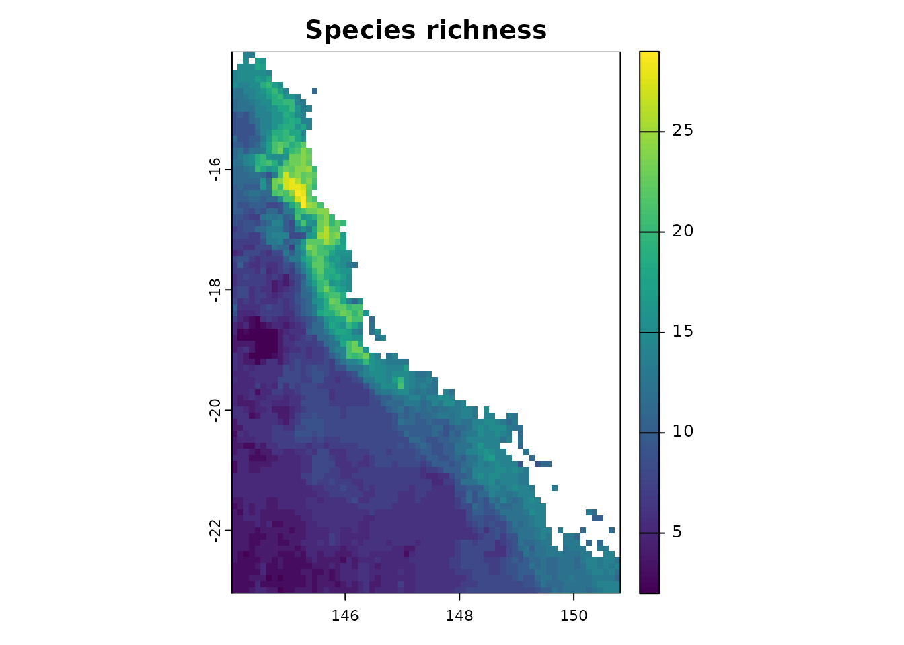
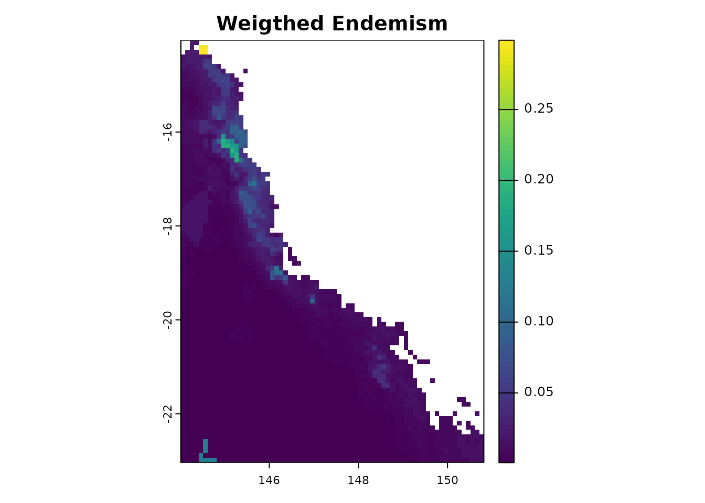
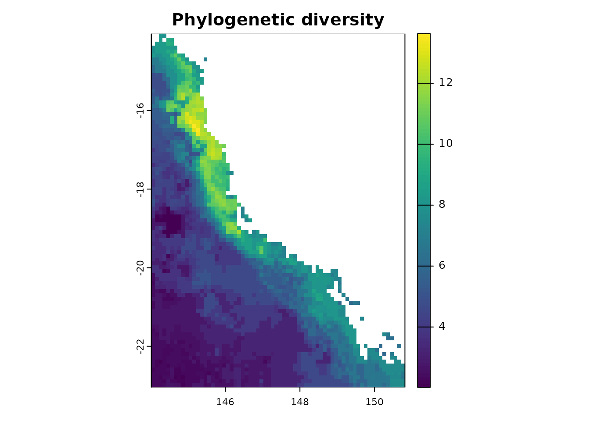
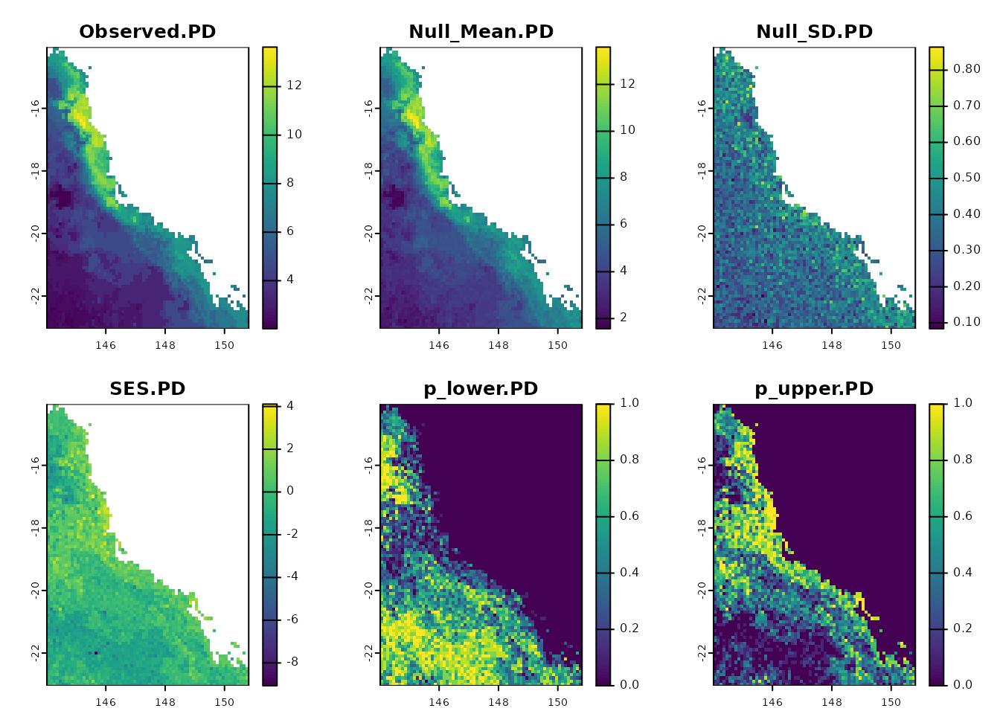
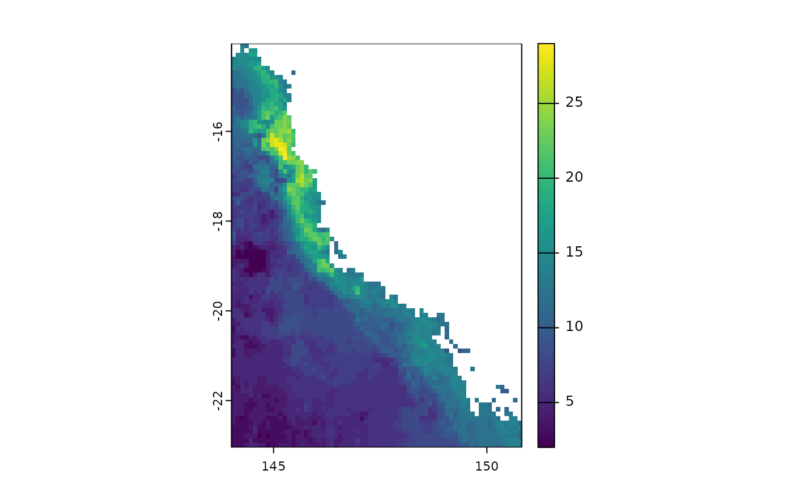

Introduction to the phyloraster package and its functionalities
Gabriela Alves-Ferreira, Flávio Mota and Neander Heming
2023-11-30
phyloraster-vignette.RmdIntroduction
phyloraster
is an R package to calculate measures of endemism and evolutionary
diversity using rasters of presence-absence as input, allowing to join
the results derived from species distribution models (SDMs) with
phylogenetic information. A lot of packages such as
phyloregion (Daru et al., 2020), picante
(Kembel et al., 2010) and pez (Pearse et al. 2015) can be
used to calculate patterns of endemism and evolutionary diversity.
However, most of these packages use matrices that can be computationally
expensive if the user is working with global or local data with high
resolution. phyloraster brings an alternative to these
packages by providing functions that calculate diversity and endemism
metrics for each raster cell, reducing the amount of RAM required for
data processing. The functions are focused on the steps of
pre-processing, processing and post-processing of macroecological and
phylogenetic data.
The pre-processing step offers basic functions for preparing the data
before running the analyses. The processing step brings together
functions to calculate Faith’s phylogenetic diversity, phylogenetic
endemism, weighted endemism and evolutionary distinctiveness. This step
also provides functions to calculate standardized effect size for each
metric through different methods of spatial and phylogenetic
randomization, aiming to control for richness effects. The user can
applying these methods of randomization to test hypotheses about the
community structure when richness patterns are correlated with endemism
and evolutionary patterns (Kembel et al. 2010). The post processing
stage includes functions to calculate the delta of metrics between
different times (e.g. present and future). We have shown that the
package has a slightly longer computation time than comparable packages,
but takes up a considerably smaller portion of RAM memory, which will
allow users to work with high-resolution datasets from local to global
scales. This enhances the application of the package by enabling users
to work with large datasets on computers with less RAM available. In
this vignette, we demonstrate the use of the functions of the
phyloraster package in detail.
Installation
The CRAN version of the package can be installed using:
install.packages("phyloraster")The development version of phyloraster can be downloaded
from GitHub
using the following code:
devtools::install_github("gabferreira/phyloraster")If you have any questions, let us know through the topic “Issues”.
phyloraster uses some R packages as dependencies such as
terra (version >= 1.6) (Hijmans, 2022), ape
(version >= 5.6) (Paradis & Schliep, 2019), and
phylobase (version >= 0.810) (Hackathon et al. 2020).
Once installed, packages can be loaded into R using
library():
Data processing
In the step of pre processing, we offer support to manipulate matrices, shapefiles, rasters, and phylogenetic trees. In the processing step, we provide functions to calculate Faith’s phylogenetic diversity (Faith, 1992), phylogenetic endemism (Rosauer et al., 2009), evolutionary distinctiveness (Isaac et al., 2007), and weighted endemism (Williams et al., 1994).
- Dataset
The package contains one dataset that allows visualizing the
structure expected to matrices, rasters, shapefiles and phylogenetic
trees and can be accessed using the function
load.data.rosauer(). This dataset contains a
data.frame with presence records for 33 Australian tree
frogs with coordinates for each site (Rosauer 2017) and a phylogenetic
tree for these species (Rosauer 2017). This raw dataset can be accessed
here.
The function also provide a binary raster of presence absence and a
shapefile with the range of 27 species following IUCN spatial data.
data <- load.data.rosauer()
head(data$presab)
#> Longitude Latitude Litoria_revelata Litoria_rothii Litoria_longirostris
#> 1 144.0657 -14.894 0 1 0
#> 2 144.0657 -15.194 0 1 0
#> 3 144.0657 -16.694 0 1 0
#> 4 144.0657 -15.494 0 1 0
#> 5 144.0657 -16.294 0 1 0
#> 6 144.0657 -16.594 0 1 0
#> Litoria_dorsalis Litoria_rubella Litoria_inermis Litoria_pallida
#> 1 0 1 1 1
#> 2 0 1 1 1
#> 3 0 1 1 1
#> 4 0 1 1 1
#> 5 0 1 1 1
#> 6 0 1 1 1
#> Litoria_latopalmata Litoria_tornieri Litoria_nasuta Litoria_nigrofrenata
#> 1 0 0 1 0
#> 2 0 0 1 0
#> 3 0 0 1 0
#> 4 0 0 1 0
#> 5 0 0 1 0
#> 6 0 0 1 0
#> Litoria_bicolor Litoria_fallax Litoria_genimaculata Litoria_wilcoxii
#> 1 1 0 0 0
#> 2 0 0 0 0
#> 3 0 0 0 0
#> 4 0 0 0 0
#> 5 0 0 0 0
#> 6 0 0 0 0
#> Litoria_jungguy Litoria_andiirrmalin Litoria_caerulea Litoria_chloris
#> 1 0 0 1 0
#> 2 0 0 1 0
#> 3 0 0 1 0
#> 4 0 0 1 0
#> 5 0 0 1 0
#> 6 0 0 1 0
#> Litoria_xanthomera Litoria_gracilenta Cyclorana_brevipes
#> 1 0 0 1
#> 2 0 0 1
#> 3 0 0 1
#> 4 0 1 1
#> 5 0 0 1
#> 6 0 0 1
#> Cyclorana_novaehollandiae Cyclorana_cultripes Cyclorana_manya
#> 1 1 0 1
#> 2 1 0 0
#> 3 1 0 1
#> 4 1 0 1
#> 5 1 0 1
#> 6 1 0 1
#> Litoria_alboguttata Cyclorana_longipes Nyctimystes_dayi Litoria_nannotis
#> 1 1 0 0 0
#> 2 1 0 0 0
#> 3 1 0 0 0
#> 4 1 0 0 0
#> 5 1 0 0 0
#> 6 1 0 0 0
#> Litoria_lorica Litoria_rheocola Litoria_nyakalensis Litoria_infrafrenata
#> 1 0 0 0 0
#> 2 0 0 0 0
#> 3 0 0 0 0
#> 4 0 0 0 0
#> 5 0 0 0 0
#> 6 0 0 0 0
data$tree
#>
#> Phylogenetic tree with 33 tips and 26 internal nodes.
#>
#> Tip labels:
#> Litoria_revelata, Litoria_rothii, Litoria_longirostris, Litoria_dorsalis, Litoria_rubella, Litoria_nigrofrenata, ...
#>
#> Rooted; includes branch lengths.
plot(data$tree, cex = 0.65)-
Function
df2rast
The function df2rast converts traditional communities
matrices (i.e. species in columns and sites in rows, with coordinates in
the two first columns) into binary distribution rasters (presence and
absence).
data <- load.data.rosauer()
r <- df2rast(x = data$presab,
CRS = "+proj=longlat +datum=WGS84 +ellps=WGS84 +towgs84=0,0,0")
class(r)
#> [1] "SpatRaster"
#> attr(,"package")
#> [1] "terra"
plot(r)-
Function
shp2rast
The shp2rast function transform a shapefile to a raster
stack with the same extent. This function allows to work, for example,
with the shapes of species distribution provided by the International
Union for the Conservation of Nature’s Spatial Database. We provide
a set of shapefiles for 27 species of Australian tree frogs. You can
visualize this data through the following code:
shp <- terra::vect(system.file("extdata", "shps_iucn_spps_rosauer.shp",
package = "phyloraster"))
colors <- rainbow(length(unique(shp$BINOMIAL)),
alpha = 0.5)
position <- match(shp$BINOMIAL,
unique(shp$BINOMIAL))
colors <- colors[position]
plot(shp, col = colors, lty = 0,
main = "Spatial polygons")
library(maps)
maps::map(add = TRUE)
r2 <- shp2rast(shp, sps.col = "BINOMIAL", ymask = FALSE, background = 0,
resolution = 0.5)
r2
#> class : SpatRaster
#> dimensions : 77, 126, 9 (nrow, ncol, nlyr)
#> resolution : 0.5, 0.5 (x, y)
#> extent : 114.099, 177.099, -39.17965, -0.6796477 (xmin, xmax, ymin, ymax)
#> coord. ref. : lon/lat WGS 84
#> source(s) : memory
#> names : Litor~ensis, Litor~ttata, Litor~ensis, Litor~malin, Litor~giana, Litor~kiana, ...
#> min values : 0, 0, 0, 0, 0, 0, ...
#> max values : 1, 1, 1, 1, 1, 1, ...
plot(r2[[9]])You can also masking the shapefile using another shapefile, as follows:
library(terra)
shp <- terra::vect(system.file("extdata", "shps_iucn_spps_rosauer.shp",
package="phyloraster"))
# create a polygon to use as mask with an extent
e <- terra::ext(113, 123, -43.64, -33.90)
p <- terra::as.polygons(e, crs="")
# cut by the total extension of the polygons
coun.crop <- terra::crop(p,
terra::ext(shp))
coun.rast <- terra::rasterize(coun.crop,
terra::rast(terra::ext(shp), resolution = 0.5))
# rasterizing with the mask of the polygon
shp.t <- shp2rast(shp, y = coun.rast, sps.col = "BINOMIAL", ymask = TRUE)
plot(shp.t[[1]], col = c("grey", "green"))-
Function
phylo.pres
To calculate evolutionary measurements it is extremely important that the raster with species distributions and the tree have the species names in the same order. We can verify this premise using a simple logical test like this.
data <- load.data.rosauer()
names(data$raster) == data$tree$tip.label
#> [1] TRUE TRUE TRUE TRUE TRUE FALSE FALSE FALSE FALSE FALSE FALSE TRUE
#> [13] TRUE TRUE FALSE FALSE FALSE TRUE FALSE FALSE FALSE TRUE TRUE FALSE
#> [25] FALSE TRUE TRUE TRUE TRUE TRUE TRUE TRUE TRUEThe function phylo.pres reorder the raster stack
according to phylogenetic tree order, extract a subtree containing only
species present in the raster stack and get the branch length for each
species.
ras <- terra::rast(system.file("extdata", "rast.presab.tif",
package = "phyloraster"))
tree <- ape::read.tree(system.file("extdata", "tree.nex",
package = "phyloraster"))
dataprep <- phylo.pres(x = ras, tree = tree)Now, the raster stack and the tip label of the tree are in the same order!
names(dataprep$x) == tree$tip.label
#> [1] TRUE TRUE TRUE TRUE TRUE TRUE TRUE TRUE TRUE TRUE TRUE TRUE TRUE TRUE TRUE
#> [16] TRUE TRUE TRUE TRUE TRUE TRUE TRUE TRUE TRUE TRUE TRUE TRUE TRUE TRUE TRUE
#> [31] TRUE TRUE TRUEThe user also has the option to compute branch length and descendant number using the full supplied tree or the tree subsetted by the species present in the raster. Notice the implications of using the full or the subsetted tree. Consider, for instance, a scenario where a clade comprises four species (A, B, C and D - Figure 1a), and the particular area of study involves two of these species (A and B, in blue- Figure 1). Furthermore, let’s assume that species A and B share a branch, denoted as D (in red- Figure 1). Using the full phylogenetic tree will estimate the whole length of branches for these two species, including the branch shared between them (D), that connects them with the ancestor shared with the species absent from that specific region (Figure 1b). On the other hand, when using the subsetted tree (Figure 1c), branch D will be disregarded and only the terminal branches will be used to calculate branch length, so that the calculated branch lengths of the species A and B will be shorter (Figure 1c).
 Figure 1. Phylogenetic tree for tree frogs denoting the implications of
using the full or the subsetted tree in the phylo.pres function. Figure
a) demonstrates the full phylogenetic tree for some tree frog species.
In figure b), we have the full tree considering species A and B that are
present in the region (blue), as well as the common ancestor between the
two species (red). In figure c) we only have the species present in the
region.
Figure 1. Phylogenetic tree for tree frogs denoting the implications of
using the full or the subsetted tree in the phylo.pres function. Figure
a) demonstrates the full phylogenetic tree for some tree frog species.
In figure b), we have the full tree considering species A and B that are
present in the region (blue), as well as the common ancestor between the
two species (red). In figure c) we only have the species present in the
region.
Analysis
Great!! Now, we are already able to calculate the measures of species richness, endemism and evolutionary diversity.
- Species richness
Our package allows you to calculate species richness using the
rast.sr function.
ras <- terra::rast(system.file("extdata", "rast.presab.tif",
package = "phyloraster"))
sr <- rast.sr(x = ras)
sr
#> class : SpatRaster
#> dimensions : 90, 68, 1 (nrow, ncol, nlyr)
#> resolution : 0.1, 0.1 (x, y)
#> extent : 144.0157, 150.8157, -23.044, -14.044 (xmin, xmax, ymin, ymax)
#> coord. ref. : lon/lat WGS 84 (EPSG:4326)
#> source(s) : memory
#> name : SR
#> min value : 2
#> max value : 29
plot(sr, main = "Species richness")
- Endemism measurements
The phyloraster package implements functions for
calculating spatial patterns of endemism based on the weighted endemism
method (WE; Williams et al. 1994, Crisp et al. 2001) through the
function rast.we. The function returns a raster with the
values of weighted endemism by each pixel. Endemism values range from 0
to 1.
ras <- terra::rast(system.file("extdata", "rast.presab.tif",
package = "phyloraster"))
wer <- rast.we(x = ras)
wer
#> class : SpatRaster
#> dimensions : 90, 68, 1 (nrow, ncol, nlyr)
#> resolution : 0.1, 0.1 (x, y)
#> extent : 144.0157, 150.8157, -23.044, -14.044 (xmin, xmax, ymin, ymax)
#> coord. ref. : lon/lat WGS 84 (EPSG:4326)
#> source(s) : memory
#> name : WE
#> min value : 0.0007231441
#> max value : 0.2989257007By using the R plot function from terra package it is
possible to visualize the regions where species with restricted range
are distributed.
wer$WE
#> class : SpatRaster
#> dimensions : 90, 68, 1 (nrow, ncol, nlyr)
#> resolution : 0.1, 0.1 (x, y)
#> extent : 144.0157, 150.8157, -23.044, -14.044 (xmin, xmax, ymin, ymax)
#> coord. ref. : lon/lat WGS 84 (EPSG:4326)
#> source(s) : memory
#> name : WE
#> min value : 0.0007231441
#> max value : 0.2989257007
plot(wer$WE, main ="Weigthed Endemism")
- Evolutionary measurements
The first evolutionary measure is Faith’s phylogenetic diversity (PD, Faith 1994), which is calculated as the sum of the branch length for all species occurring in a given region (Faith 1994).
ras <- terra::rast(system.file("extdata", "rast.presab.tif",
package = "phyloraster"))
tree <- ape::read.tree(system.file("extdata", "tree.nex",
package = "phyloraster"))
dataprep <- phylo.pres(x = ras, tree = tree, pruning = "tree")
pdr <- rast.pd(x = dataprep$x, edge.path = dataprep$edge.path,
branch.length = dataprep$branch.length)
plot(pdr$PD, main = "Phylogenetic diversity")
The second measure is phylogenetic endemism (PE, Rosauer et
al. 2009), which calculates the degree to which PD are restricted to a
specific region (Rosauer et al. 2009). The function rast.pe
returns a raster layer containing PE the region of interest.
ras <- terra::rast(system.file("extdata", "rast.presab.tif",
package = "phyloraster"))
tree <- ape::read.tree(system.file("extdata", "tree.nex",
package = "phyloraster"))
per <- rast.pe(x = dataprep$x, tree)
per
#> class : SpatRaster
#> dimensions : 90, 68, 1 (nrow, ncol, nlyr)
#> resolution : 0.1, 0.1 (x, y)
#> extent : 144.0157, 150.8157, -23.044, -14.044 (xmin, xmax, ymin, ymax)
#> coord. ref. : lon/lat WGS 84 (EPSG:4326)
#> source(s) : memory
#> name : PE
#> min value : 0.0002224064
#> max value : 0.1756404428The result can be visualized using the R plot function
from the terra package.
plot(per$PE, main = "Phylogenetic Endemism")Null models
Null models are a widely used method to control for richness effects
in diversity measures (Gotelli and Ulrich, 2012). The standardized
effect size (SES) measure, also known as z-score or z-value, is used to
calculate null models from randomization tests (Gotelli and McCabe
2002). phyloraster implements three methods to calculate
SES using spatial and phylogenetic randomization: rast.pe.ses,
rast.pd.ses, and rast.we.ses.
- Spatial and phylogenetic randomization
The randomization procedure for the calculation of SES is done
internally in the functions rast.we.ses(),
rast.pd.ses(), rast.ed.ses(),
rast.pe.ses(), and geo.phylo.ses() through the
package SESraster (Heming et al., 2023).
SESraster currently implements six algorithms to randomize
binary species distribution with several levels of constraints: SIM1,
SIM2, SIM3, SIM5, SIM6, and SIM9 (sensu Gotelli, 2000). The methods
implemented in the SESraster are based on how species
(originally rows) and sites (originally columns) are treated
(i.e. fixed, equiprobable, or proportional sums) (Gotelli, 2000). The
randomization algorithms currently available in SESraster
are: SIM1 (species occurrence equiprobable and site richness
equiprobable), SIM2 (species occurrence fixed and site richness
equiprobable), SIM3 (species occurrence equiprobable and site richness
fixed), SIM5 (species occurrence proportional and site richness fixed),
SIM6 (species occurrence proportional and site richness fixed) and SIM9
(species occurrence fixed and site richness fixed, similar to the
preserved model of Laffan & Crisp, 2003). In addition,
SESraster (consequently phyloraster) supports
user’s custom randomization algorithms for SES calculation, as long as
the function returns objects of class SpatRaster. This allows complete
flexibility for using any algorithm not yet implemented by the
package.
As default, the phyloraster uses the function
bootspat_str() from the SESraster package to
conduct the randomizations, but the user is free to choose any of the
other methods mentioned above through the spat_alg argument in the
*.ses() functions of the phyloraster package.
The function bootspat_str() is equivalent to the SIM5
(proportional-fixed) method of Gotelli (2000), which partially relaxes
the spatial structure of species distributions but keeps the spatial
structure of the observed richness pattern across cells.
Now that we have presented the randomization methods, we can start to build the null models.
library(SESraster)
ras <- terra::rast(system.file("extdata", "rast.presab.tif",
package = "phyloraster"))
tree <- ape::read.tree(system.file("extdata", "tree.nex",
package = "phyloraster"))
data <- phylo.pres(ras, tree, pruning = "tree")
t <- rast.pd.ses(data$x, edge.path = data$edge.path,
branch.length = data$branch.length, aleats = 10,
random = "spat")Plotting the results
plot(t)
Post processing
-
Function
delta.grid
The package also brings the function delta.grid that
allows you to calculate the difference between spatialized diversity
metrics between two different times. This function would allow assessing
how species richness varies between different times, which could be
useful in a climate change scenario. For example, imagine that we
currently have 33 tree frog species of the subfamily Pelodryadinae
occurring in Australia. In the map below we can visualize the spatial
pattern of species richness.
# load the data
x <- terra::rast(system.file("extdata", "rast.presab.tif",
package="phyloraster"))
# richness
riq.pres <- rast.sr(x)
plot(riq.pres)
Now imagine that as climate change progresses, 16 relatively more vulnerable species are heavily affected and become locally extinct.
# load the data
x <- terra::rast(system.file("extdata", "rast.presab.tif",
package="phyloraster"))
# richness future
riq.fut <- rast.sr(x[[c(1:15)]]) # imagine we lost some species in the future
terra::plot(riq.fut)The delta.grid function allows you to visualize the
variation in these richness patterns spatially. See an example
below.
dg <- delta.grid(riq.pres, riq.fut)
plot(dg)On the map we can see that the greatest loss occurs in the eastern
region of the map, losing up to 16 species. The delta.grid
function can be used for any of the other metrics that are available in
the phyloraster package.
References
Crisp, M., Laffan, S., Linder, H. and Monro, A. (2001). Endemism in the Australian flora. Journal of Biogeography, 28, 183–198.
Daru, B. H., Karunarathne, P., and Schliep, K. (2020). phyloregion: R package for biogeographical regionalization and macroecology. Methods in Ecology and Evolution, 11(11), 1483–1491. https://doi.org/10.1111/2041-210X.13478
Faith, D. P. (1992). Conservation evaluation and phylogenetic diversity. Biological conservation, 61(1), 1-10.
Gotelli, N. J., and McCabe, D. J. (2002). Species co-occurrence: A meta-analysis of J. M. Diamond’s assembly rules model. Ecology, 83(8), 2091–2096. https://doi.org/10.1890/0012-9658(2002)083[2091:SCOAMA]2.0.CO;2
Gotelli, N. J., and Ulrich, W. (2012). Statistical challenges in null model analysis. Oikos, 121(2), 171–180. https://doi.org/10.1111/j.1600-0706.2011.20301.x
Hackathon, R. (2020). phylobase: Base Package for Phylogenetic Structures and Comparative Data (0.8. 10). https://CRAN.R-project.org/package=phylobase
Hjimans, R. J. (2022). Terra, Spatial Data Analysis (1.6.7). https://CRAN.R-project.org/package=terra
Isaac, N. J., Turvey, S. T., Collen, B., Waterman, C. and Baillie, J. E. (2007). Mammals on the EDGE: conservation priorities based on threat and phylogeny. PLoS ONE 2, e296.
Kembel, S. W., Cowan, P. D., Helmus, M. R., Cornwell, W. K., Morlon, H., Ackerly, D. D., Blomberg, S. P., and Webb, C. O. (2010). Picante: R tools for integrating phylogenies and ecology. Bioinformatics, 26(11), 1463–1464. https://doi.org/10.1093/bioinformatics/btq166
Paradis, E., and Schliep, K. (2019). ape 5.0: An environment for modern phylogenetics and evolutionary analyses in R. Bioinformatics, 35, 526–528.
Pearse, W. D., Cadotte, M. W., Cavender-Bares, J., Ives, A. R., Tucker, C. M., Walker, S. C., & Helmus, M. R. (2015). pez: Phylogenetics for the environmental sciences. Bioinformatics, 31(17), 2888–2890. https://doi.org/10.1093/bioinformatics/btv277
Rosauer, D. A. N., Laffan, S. W., Crisp, M. D., Donnellan, S. C. and Cook, L. G. (2009). Phylogenetic endemism: a new approach for identifying geographical concentrations of evolutionary history. Molecular ecology, 18(19), 4061-4072.
Williams, P.H., Humphries, C.J., Forey, P.L., Humphries, C.J. and VaneWright, R.I. (1994). Biodiversity, taxonomic relatedness, and endemism in conservation. In: Systematics and Conservation Evaluation (eds Forey PL, Humphries CJ, Vane-Wright RI), p. 438. Oxford University Press, Oxford.